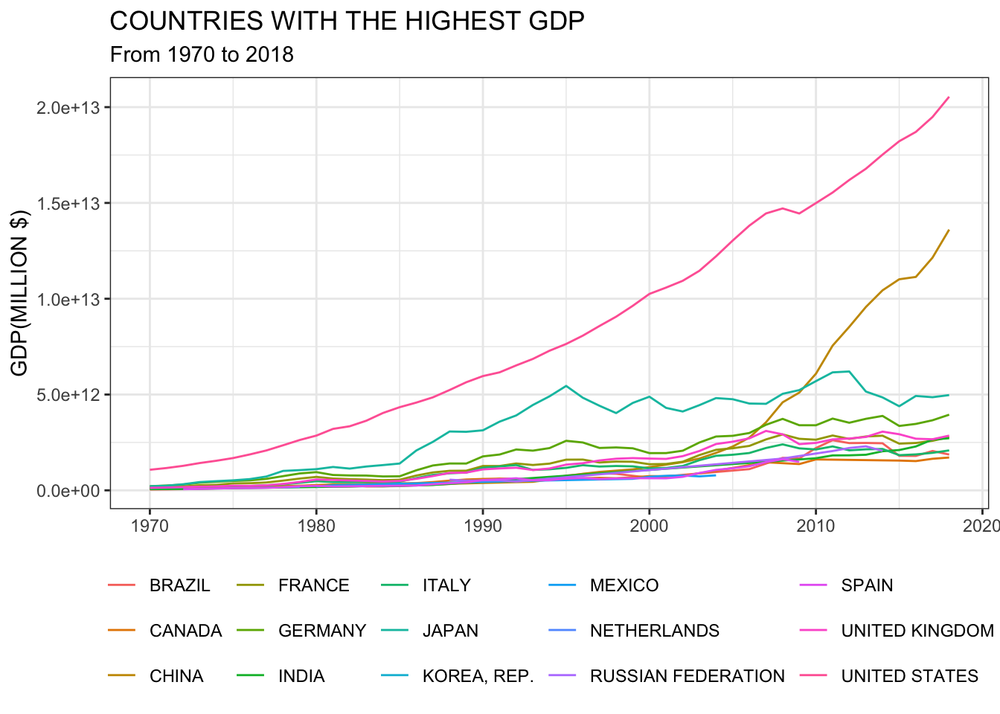
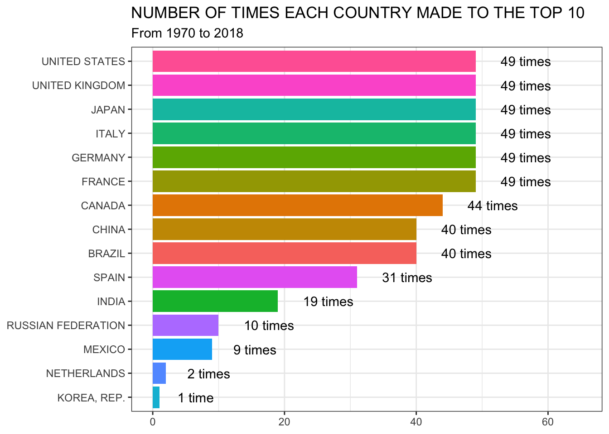
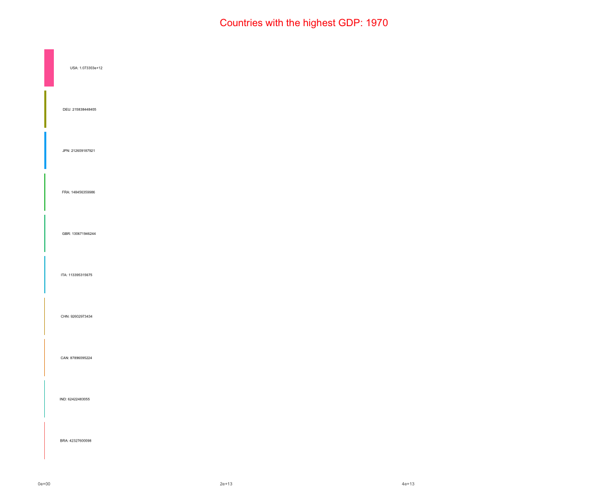

In this post, I explore how to create an animated bar chart
in R to show the top 10 countries with the highest GDP. The data
from World Bank is used which is freely accessible from this
link https://data.worldbank.org/indicator/NY.GDP.MKTP.CD).
Since the data is in comma-separated value (.csv) format, the
read_csv() function from the readr
package is used to load the data.
## New names:
## Rows: 264 Columns: 65
## ── Column specification
## ───────────────────────────────────────────────────────────────────────────── Delimiter: "," chr
## (4): Country Name, Country Code, Indicator Name, Indicator Code dbl (59): 1960, 1961, 1962, 1963,
## 1964, 1965, 1966, 1967, 1968, 1969, 1970, 1971, 1972, 1973, 197... lgl (2): 2019, ...65
## ℹ Use `spec()` to retrieve the full column specification for this data. ℹ Specify the column types
## or set `show_col_types = FALSE` to quiet this message.
## • `` -> `...65`Let’s have a look at the data.
## Rows: 264
## Columns: 65
## $ `Country Name` [3m[38;5;246m<chr>[39m[23m "Aruba", "Afghanistan", "Angola", "Albania", "Andorra", "Arab World", "Uni…
## $ `Country Code` [3m[38;5;246m<chr>[39m[23m "ABW", "AFG", "AGO", "ALB", "AND", "ARB", "ARE", "ARG", "ARM", "ASM", "ATG…
## $ `Indicator Name` [3m[38;5;246m<chr>[39m[23m "GDP (current US$)", "GDP (current US$)", "GDP (current US$)", "GDP (curre…
## $ `Indicator Code` [3m[38;5;246m<chr>[39m[23m "NY.GDP.MKTP.CD", "NY.GDP.MKTP.CD", "NY.GDP.MKTP.CD", "NY.GDP.MKTP.CD", "N…
## $ `1960` [3m[38;5;246m<dbl>[39m[23m NA, 537777811, NA, NA, NA, NA, NA, NA, NA, NA, NA, 18577668272, 6592693841…
## $ `1961` [3m[38;5;246m<dbl>[39m[23m NA, 548888896, NA, NA, NA, NA, NA, NA, NA, NA, NA, 19652816665, 7311749633…
## $ `1962` [3m[38;5;246m<dbl>[39m[23m NA, 546666678, NA, NA, NA, NA, NA, 24450604878, NA, NA, NA, 19892485161, 7…
## $ `1963` [3m[38;5;246m<dbl>[39m[23m NA, 751111191, NA, NA, NA, NA, NA, 18272123664, NA, NA, NA, 21507447643, 8…
## $ `1964` [3m[38;5;246m<dbl>[39m[23m NA, 800000044, NA, NA, NA, NA, NA, 25605249382, NA, NA, NA, 23764139321, 9…
## $ `1965` [3m[38;5;246m<dbl>[39m[23m NA, 1006666638, NA, NA, NA, NA, NA, 28344705967, NA, NA, NA, 25936835032, …
## $ `1966` [3m[38;5;246m<dbl>[39m[23m NA, 1399999967, NA, NA, NA, NA, NA, 28630474728, NA, NA, NA, 27268451114, …
## $ `1967` [3m[38;5;246m<dbl>[39m[23m NA, 1673333418, NA, NA, NA, NA, NA, 24256667553, NA, NA, NA, 30397580916, …
## $ `1968` [3m[38;5;246m<dbl>[39m[23m NA, 1373333367, NA, NA, NA, 25783474553, NA, 26436857247, NA, NA, NA, 3266…
## $ `1969` [3m[38;5;246m<dbl>[39m[23m NA, 1408888922, NA, NA, NA, 28323904179, NA, 31256284544, NA, NA, NA, 3662…
## $ `1970` [3m[38;5;246m<dbl>[39m[23m NA, 1748886596, NA, NA, 78619206, 31901466301, NA, 31584210366, NA, NA, NA…
## $ `1971` [3m[38;5;246m<dbl>[39m[23m NA, 1831108971, NA, NA, 89409820, 36922020166, NA, 33293199095, NA, NA, NA…
## $ `1972` [3m[38;5;246m<dbl>[39m[23m NA, 1595555476, NA, NA, 113408232, 44037818682, NA, 34733000536, NA, NA, N…
## $ `1973` [3m[38;5;246m<dbl>[39m[23m NA, 1733333264, NA, NA, 150820103, 55739952569, NA, 52544000117, NA, NA, N…
## $ `1974` [3m[38;5;246m<dbl>[39m[23m NA, 2155555498, NA, NA, 186558696, 105458157385, NA, 72436777342, NA, NA, …
## $ `1975` [3m[38;5;246m<dbl>[39m[23m NA, 2366666616, NA, NA, 220127246, 116816052870, 14720672507, 52438647922,…
## $ `1976` [3m[38;5;246m<dbl>[39m[23m NA, 2555555567, NA, NA, 227281025, 145153409926, 19213022691, 51169499891,…
## $ `1977` [3m[38;5;246m<dbl>[39m[23m NA, 2953333418, NA, NA, 254020153, 167172518304, 24871775165, 56781000101,…
## $ `1978` [3m[38;5;246m<dbl>[39m[23m NA, 3300000109, NA, NA, 308008898, 183595498972, 23775831783, 58082870156,…
## $ `1979` [3m[38;5;246m<dbl>[39m[23m NA, 3697940410, NA, NA, 411578334, 248499691123, 31225463218, 69252328953,…
## $ `1980` [3m[38;5;246m<dbl>[39m[23m NA, 3641723322, 5930503401, NA, 446416106, 336972590486, 43598748449, 7696…
## $ `1981` [3m[38;5;246m<dbl>[39m[23m NA, 3478787909, 5550483036, NA, 388958731, 347413172458, 49333424135, 7867…
## $ `1982` [3m[38;5;246m<dbl>[39m[23m NA, NA, 5550483036, NA, 375895956, 325886186038, 46622718605, 84307486837,…
## $ `1983` [3m[38;5;246m<dbl>[39m[23m NA, NA, 5784341596, NA, 327861833, 306140805808, 42803323345, 103979106778…
## $ `1984` [3m[38;5;246m<dbl>[39m[23m NA, NA, 6131475065, 1857338012, 330070689, 310544238979, 41807954236, 7909…
## $ `1985` [3m[38;5;246m<dbl>[39m[23m NA, NA, 7553560459, 1897050133, 346737965, 307396012668, 40603650232, 8841…
## $ `1986` [3m[38;5;246m<dbl>[39m[23m 405463417, NA, 7072063345, 2097326250, 482000594, 293430656655, 3394361209…
## $ `1987` [3m[38;5;246m<dbl>[39m[23m 487602458, NA, 8083872012, 2080796250, 611316399, 312834602129, 3638490874…
## $ `1988` [3m[38;5;246m<dbl>[39m[23m 596423607, NA, 8769250550, 2051236250, 721425939, 307664324721, 3627567420…
## $ `1989` [3m[38;5;246m<dbl>[39m[23m 695304363, NA, 10201099040, 2253090000, 795449332, 322628415961, 414649959…
## $ `1990` [3m[38;5;246m<dbl>[39m[23m 764887117, NA, 11228764963, 2028553750, 1029048482, 446670961697, 50701443…
## $ `1991` [3m[38;5;246m<dbl>[39m[23m 872138731, NA, 10603784541, 1099559028, 1106928583, 440404687634, 51552165…
## $ `1992` [3m[38;5;246m<dbl>[39m[23m 958463200, NA, 8307810974, 652174991, 1210013652, 471510788826, 5423917188…
## $ `1993` [3m[38;5;246m<dbl>[39m[23m 1082979708, NA, 5768720422, 1185315468, 1007025755, 476989331834, 55625170…
## $ `1994` [3m[38;5;246m<dbl>[39m[23m 1245688253, NA, 4438321017, 1880951520, 1017549124, 487505088036, 59305093…
## $ `1995` [3m[38;5;246m<dbl>[39m[23m 1320474860, NA, 5538749260, 2392764853, 1178738991, 523791440533, 65743666…
## $ `1996` [3m[38;5;246m<dbl>[39m[23m 1379960894, NA, 7526446606, 3199642580, 1223945357, 578295690140, 73571233…
## $ `1997` [3m[38;5;246m<dbl>[39m[23m 1531944134, NA, 7648377413, 2258515610, 1180597273, 613346331360, 78839008…
## $ `1998` [3m[38;5;246m<dbl>[39m[23m 1665100559, NA, 6506229607, 2545967253, 1211932398, 591579002606, 75674336…
## $ `1999` [3m[38;5;246m<dbl>[39m[23m 1722798883, NA, 6152922943, 3212119044, 1239876305, 643960199016, 84445473…
## $ `2000` [3m[38;5;246m<dbl>[39m[23m 1873452514, NA, 9129594819, 3480355189, 1434429703, 735131486173, 10433737…
## $ `2001` [3m[38;5;246m<dbl>[39m[23m 1920111732, NA, 8936063723, 3922099471, 1496912752, 723369627610, 10331164…
## $ `2002` [3m[38;5;246m<dbl>[39m[23m 1941340782, 4055176933, 15285594828, 4348070165, 1733116883, 729106974590,…
## $ `2003` [3m[38;5;246m<dbl>[39m[23m 2021229050, 4515563414, 17812705294, 5611492283, 2398645598, 823290269191,…
## $ `2004` [3m[38;5;246m<dbl>[39m[23m 2228491620, 5226775163, 23552052408, 7184681399, 2935659300, 964319999130,…
## $ `2005` [3m[38;5;246m<dbl>[39m[23m 2.330726e+09, 6.209140e+09, 3.697092e+10, 8.052076e+09, 3.255789e+09, 1.18…
## $ `2006` [3m[38;5;246m<dbl>[39m[23m 2.424581e+09, 6.971287e+09, 5.238101e+10, 8.896074e+09, 3.543257e+09, 1.40…
## $ `2007` [3m[38;5;246m<dbl>[39m[23m 2.615084e+09, 9.747886e+09, 6.526645e+10, 1.067732e+10, 4.016972e+09, 1.63…
## $ `2008` [3m[38;5;246m<dbl>[39m[23m 2.745251e+09, 1.010922e+10, 8.853861e+10, 1.288135e+10, 4.007353e+09, 2.07…
## $ `2009` [3m[38;5;246m<dbl>[39m[23m 2.498883e+09, 1.243909e+10, 7.030716e+10, 1.204422e+10, 3.660531e+09, 1.79…
## $ `2010` [3m[38;5;246m<dbl>[39m[23m 2.390503e+09, 1.585657e+10, 8.379950e+10, 1.192696e+10, 3.355695e+09, 2.11…
## $ `2011` [3m[38;5;246m<dbl>[39m[23m 2.549721e+09, 1.780428e+10, 1.117897e+11, 1.289087e+10, 3.442063e+09, 2.50…
## $ `2012` [3m[38;5;246m<dbl>[39m[23m 2.534637e+09, 2.000162e+10, 1.280529e+11, 1.231978e+10, 3.164615e+09, 2.78…
## $ `2013` [3m[38;5;246m<dbl>[39m[23m 2.581564e+09, 2.056105e+10, 1.367099e+11, 1.277628e+10, 3.281585e+09, 2.86…
## $ `2014` [3m[38;5;246m<dbl>[39m[23m 2.649721e+09, 2.048487e+10, 1.457122e+11, 1.322824e+10, 3.350736e+09, 2.90…
## $ `2015` [3m[38;5;246m<dbl>[39m[23m 2.691620e+09, 1.990711e+10, 1.161936e+11, 1.138693e+10, 2.811489e+09, 2.55…
## $ `2016` [3m[38;5;246m<dbl>[39m[23m 2.646927e+09, 1.936264e+10, 1.011239e+11, 1.186135e+10, 2.877312e+09, 2.51…
## $ `2017` [3m[38;5;246m<dbl>[39m[23m 2.700559e+09, 2.019176e+10, 1.221238e+11, 1.302506e+10, 3.013387e+09, 2.58…
## $ `2018` [3m[38;5;246m<dbl>[39m[23m NA, 1.936297e+10, 1.057510e+11, 1.510250e+10, 3.236544e+09, 2.774315e+12, …
## $ `2019` [3m[38;5;246m<lgl>[39m[23m NA, NA, NA, NA, NA, NA, NA, NA, NA, NA, NA, NA, NA, NA, NA, NA, NA, NA, NA…
## $ ...65 [3m[38;5;246m<lgl>[39m[23m NA, NA, NA, NA, NA, NA, NA, NA, NA, NA, NA, NA, NA, NA, NA, NA, NA, NA, NA…As we can see the data contains country names, country codes, indicator names, indicator codes, and the GDP from 1960 to 2018. At this step, let’s delete those columns that will not be used in the analysis, transform the data from wide to long format, drop those rows that contain missing values, and keep only those countries with the highest GDP in each year. To do so, I am using the below codes. These codes are replicable and you can use it for your practice as well.
gdp <- gdp %>%
select(-c("Indicator Name", "Indicator Code", "2019", "...65")) %>%
gather(key = "year", value = "gdp", -c("Country Name", "Country Code")) %>%
filter(!`Country Name` %in% c("World", "Euro area", "European Union", "IBRD only", "IDA & IBRD total", "Japan Late-demographic dividend", "Low & middle income", "Middle income", "OECD members", "Post-demographic dividend", "East Asia & Pacific", "Europe & Central Asia", "Latin America & Caribbean", "Middle East & North Africa", "North America", "South Asia","Sub-Saharan Africa", "Low income", "Lower middle income", "Upper middle income", "High income", "Early-demographic dividend", "East Asia & Pacific (excluding high income)", "East Asia & Pacific (IDA & IBRD countries)", "Europe & Central Asia (excluding high income)", "Europe & Central Asia (IDA & IBRD countries)", "Late-demographic dividend", "Latin America & Caribbean (excluding high income)", "Latin America & the Caribbean (IDA & IBRD countries)", "Arab World", "South Asia (IDA & IBRD)", "IDA total", "Sub-Saharan Africa (excluding high income)", "Sub-Saharan Africa (IDA & IBRD countries)", "IDA blend", "IDA only", "Heavily indebted poor countries (HIPC)")) %>%
filter(!is.na(gdp), year>1969) %>%
mutate(year = as.numeric(year)) %>% arrange(year, - gdp) %>%
group_by(year) %>% mutate(rank = row_number()) %>% filter(rank <=10) %>%
mutate(total_gdp = sum(gdp))Let’s have a look at the data once again and explore which countries made to the top 10 most of the time.
## Rows: 490
## Columns: 6
## Groups: year [49]
## $ `Country Name` [3m[38;5;246m<chr>[39m[23m "United States", "Germany", "Japan", "France", "United Kingdom", "Italy", "C…
## $ `Country Code` [3m[38;5;246m<chr>[39m[23m "USA", "DEU", "JPN", "FRA", "GBR", "ITA", "CHN", "CAN", "IND", "BRA", "USA",…
## $ year [3m[38;5;246m<dbl>[39m[23m 1970, 1970, 1970, 1970, 1970, 1970, 1970, 1970, 1970, 1970, 1971, 1971, 1971…
## $ gdp [3m[38;5;246m<dbl>[39m[23m 1.073303e+12, 2.158384e+11, 2.126092e+11, 1.484564e+11, 1.306719e+11, 1.1339…
## $ rank [3m[38;5;246m<int>[39m[23m 1, 2, 3, 4, 5, 6, 7, 8, 9, 10, 1, 2, 3, 4, 5, 6, 7, 8, 9, 10, 1, 2, 3, 4, 5,…
## $ total_gdp [3m[38;5;246m<dbl>[39m[23m 2.179523e+12, 2.179523e+12, 2.179523e+12, 2.179523e+12, 2.179523e+12, 2.1795…gdp %>%
ggplot(aes(x = year, y = gdp, col = toupper(`Country Name`))) + geom_line() + theme_bw() +
theme(legend.title = element_blank(), legend.position = "bottom") +
labs(title = toupper("countries with the highest gdp"), subtitle = "From 1970 to 2018", x = NULL, y = toupper("gdp(million $)"))
## Min. 1st Qu. Median Mean 3rd Qu. Max.
## 4.233e+10 4.658e+11 1.245e+12 2.286e+12 2.586e+12 2.054e+13table(gdp$`Country Name`) %>%
data.table() %>%
mutate(n = ifelse(N>1, " times", " time")) %>%
ggplot(aes(x = reorder(toupper(V1), N), y = N, fill = V1)) +
geom_col(show.legend = F) + theme_bw() + coord_flip() +
ylim(0, 65) +
labs(title = toupper("number of times each country made to the top 10"), subtitle = "From 1970 to 2018", x = NULL, y = NULL) +
geom_text(aes(label = paste0(N, n)), hjust = -0.5)
At this moment the data is in good shape and can be used for
creating an animated bar graph. I am using the
ggplot() function from the ggplot2
package for creating bar chart with the explanation for each
line of code.
plot <- gdp %>%
# creating bar chart
ggplot(aes(x = rank, y = gdp, fill = `Country Code`)) + geom_bar(stat = "identity", show.legend = F) +
# Flip cartesian coordinates
coord_flip() +
# sort from highest to the lowest
scale_x_reverse() +
# # you can play around this part to change the aesthetic view of the graph
theme(
axis.text.y=element_blank(),
axis.ticks=element_blank(),
panel.background=element_blank(),
plot.title=element_text(size=20, hjust=0.5, face="bold", vjust=-1, color = "red"),
plot.margin = margin(1,1, 1, 1, "cm")
)Once the bar chart is created, it can be combined with transition_states. The transition_states from gganimate package is used to split the data into multiple parts based on the levels in a given column (here based on each year).
plot <- plot + transition_states(year,
transition_length = 3, # The relative length of the transition
state_length = 1 # The relative length of the pause at each category
) +
labs(title = 'Countries with the highest GDP: {closest_state}', x = "", y = "") + # main title and axis titles
ylim(0, max(gdp$total_gdp)) +
geom_text(aes(label = paste0(`Country Code`,": ", round(gdp,0)), hjust= -0.5),size = 2.5) # for adding country code and GDPAfter the animated graph is made, we can use the below codes to save the plot as GIF.
animate(plot,
nframes = 350, #The number of frames to render (default 100)
fps = 20, # The framerate of the animation in frames/sec (default 10)
width = 1200, height = 1000,
renderer = gifski_renderer("GDP.gif")
)